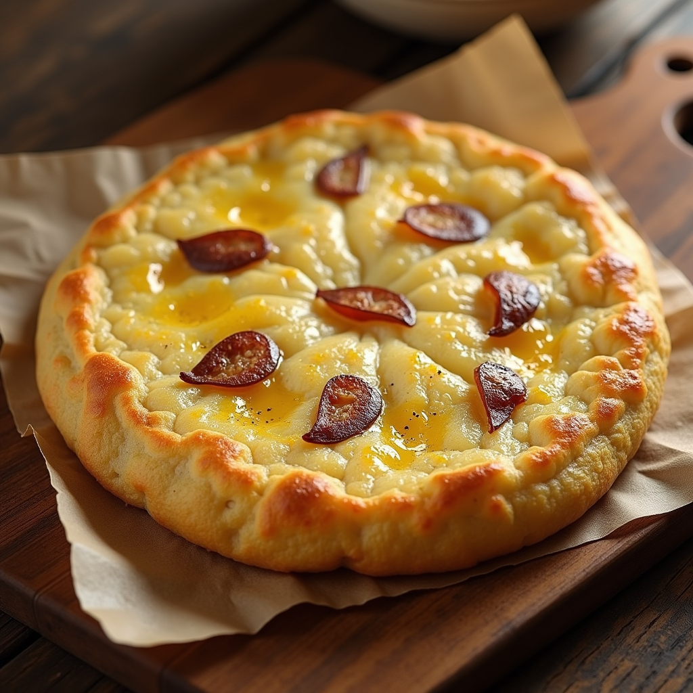

Spanish Omelette

Description
A traditional Spanish omelette, or tortilla española, made with eggs, potatoes, and onions, cooked to a golden
brown for a soft, flavorful interior.
Ingredients
- 4 eggs
- 3 medium potatoes, peeled and thinly sliced
- 1 medium onion, thinly sliced
- 1/2 cup olive oil
- Salt to taste
Steps
- Heat olive oil in a frying pan over medium heat. Add sliced potatoes and onions, cooking gently until
they are soft and lightly golden.
- Remove potatoes and onions from the pan, draining excess oil. Let them cool slightly.
- In a bowl, beat the eggs with a pinch of salt. Add the cooked potatoes and onions, mixing well.
- Pour the mixture back into the frying pan with a little oil, spreading it evenly. Cook on medium heat
until the edges are set, then carefully flip to cook the other side until golden brown.
- Allow it to cool slightly, then cut into wedges and serve warm or at room temperature.